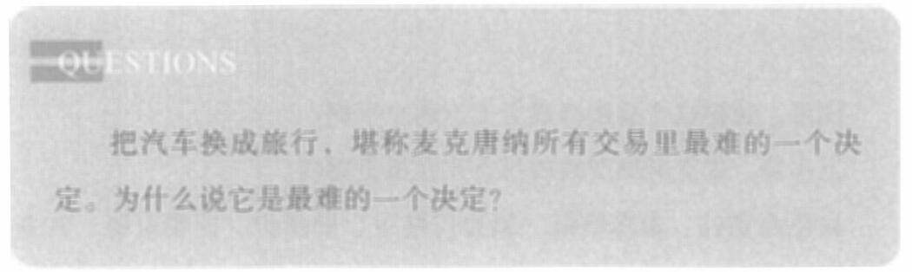

第十三章 变现逻辑
而不是只关注表面的价格与价值。银行需要的是最新款的ATM机吗?提款机用户需要的是最新款的ATM机吗? 不。银行需要的是拓展自己的客户网络，而用户需要的是便捷的服务。
地铁站那些1米×1米的空地原本是闲置的，朋友公司的ATM机的成本价格并未改变，但是当上百台ATM机在地铁站齐聚亮相时，它们对银行的效用就发生了变化。
我们回到别针换别墅的故事，来看它的下半场。
故事的上半场，麦克唐纳用一枚别针换到了一辆汽车，这场奇妙的交换之旅成为网络社区津津乐道的话题。然后媒体介入，对其进行报道，这件事又升级为一起受到关注的公共事件。
麦克唐纳没有停止。他继续交换。加拿大一家雪地汽车杂志用一次旅行换走了那辆雪地汽车。当然，我们可以怀疑，这次旅行也是那家杂志社用闲置广告版面换的。
这里我要提个问题：

接下来，麦克唐纳又经过两次交换，得到了一份录制一张唱片的合同。
注意，这次交易是整场操作中的一招妙手。那么问题又来了：
371